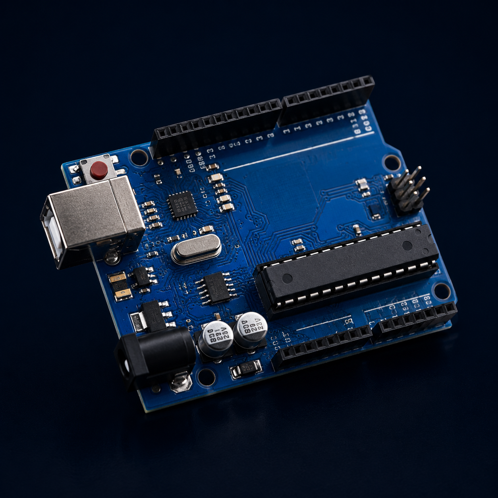
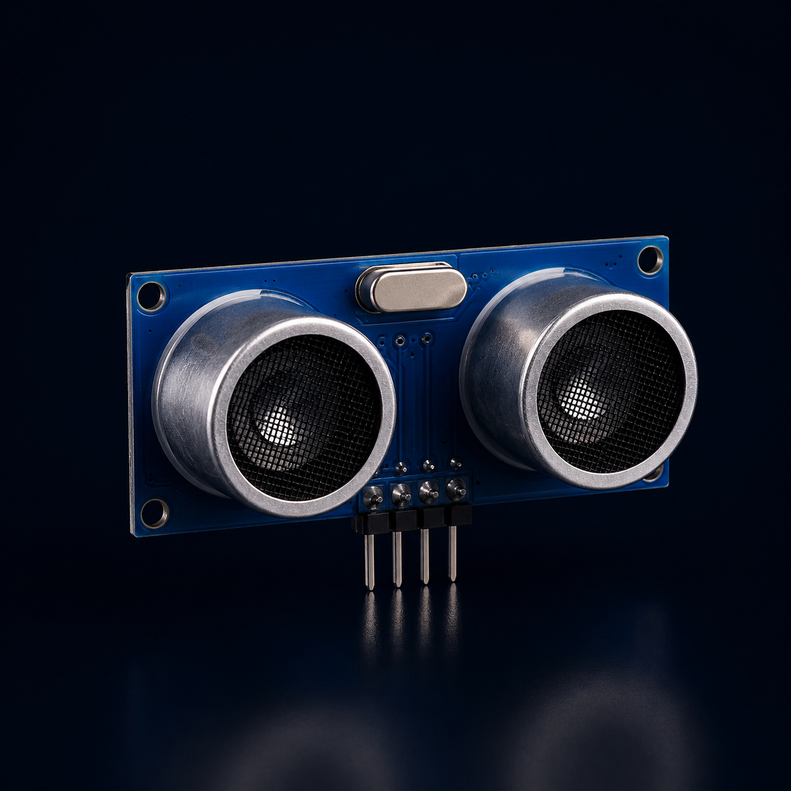
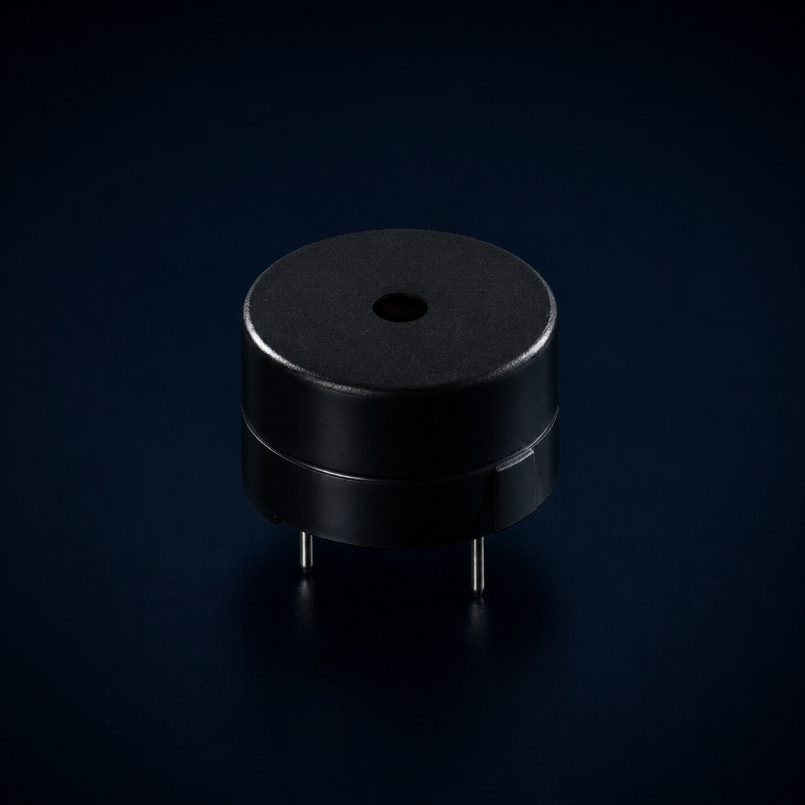
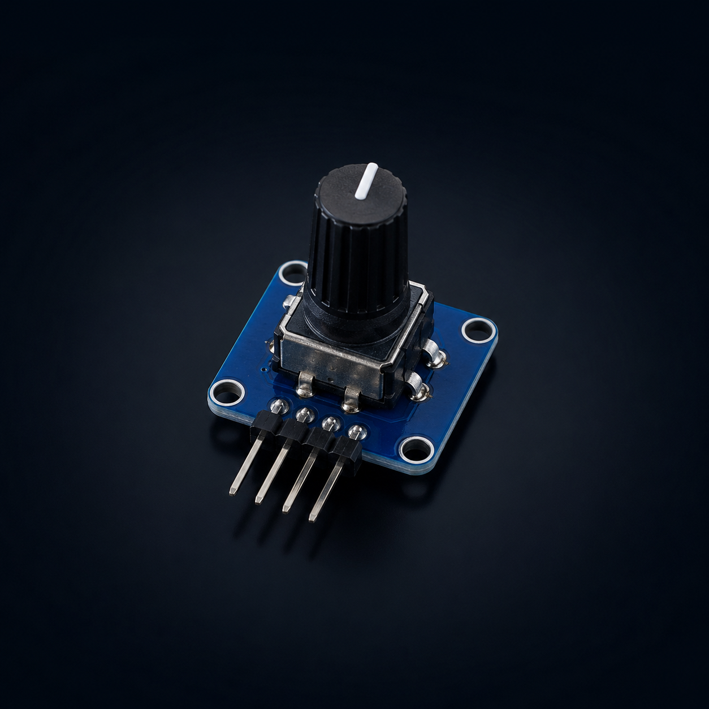
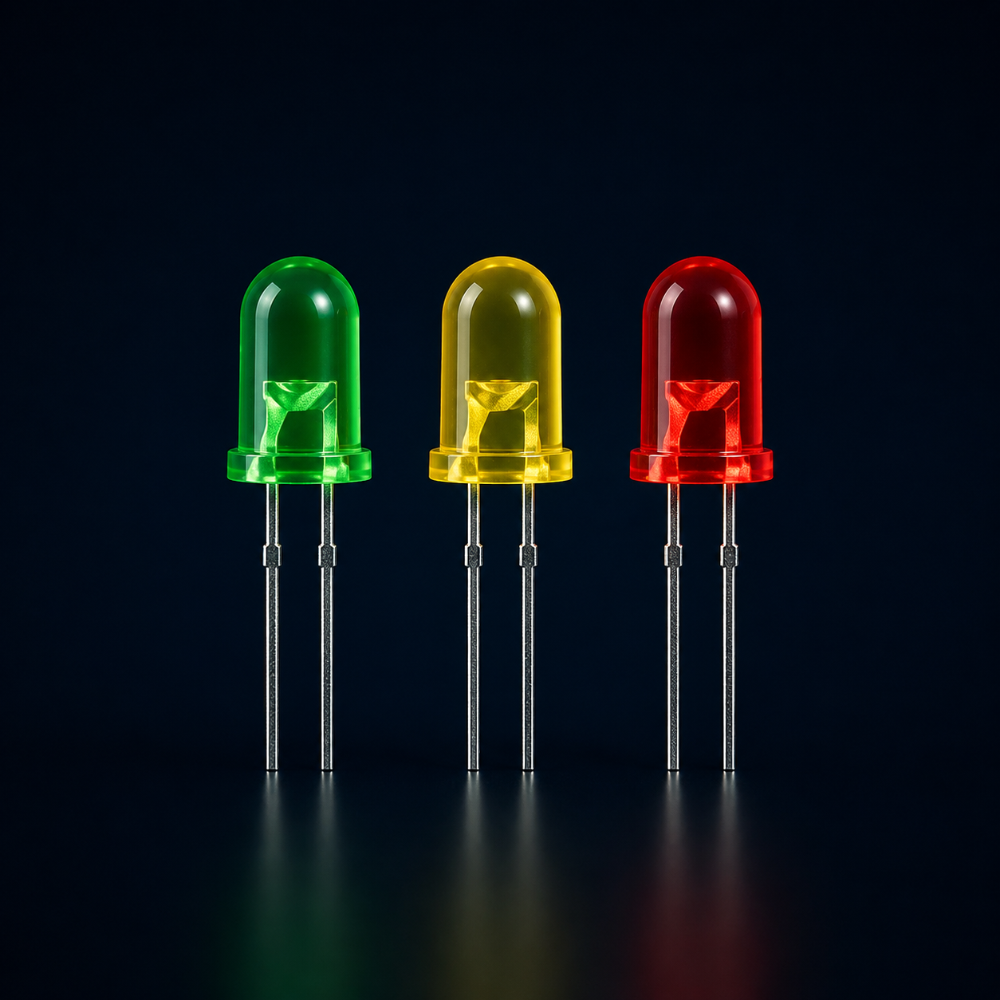
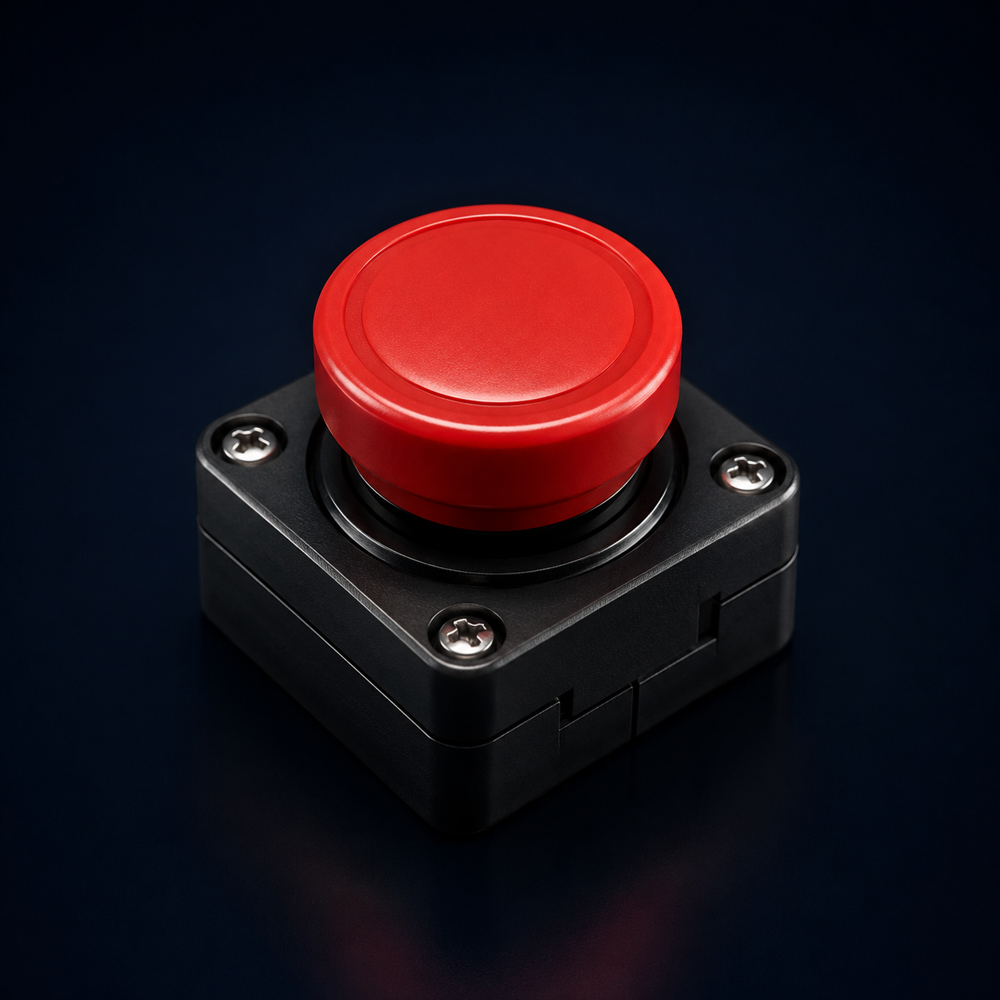

Dados do espaço, proteção na Terra
Solução de monitoramento climático e alerta emergencial
Solução inteligente que combina dados orbitais simulados e sensores locais para detectar riscos climáticos.
O sistema emite alertas para apoiar comunidades em situações de enchentes, queimadas e eventos extremos.
Eventos climáticos extremos estão cada vez mais frequentes e intensos.
Chuvas intensas causam alagamentos e deslizamentos.
Calor extremo coloca a saúde em risco e sobrecarrega recursos.
Baixa umidade aumenta riscos de incêndios e problemas respiratórios.
Alertas tardios dificultam a prevenção e aumentam os impactos.
Dispositivos de computação de borda coletam, processam e alertam em tempo real.

Controla o sistema e processa os dados dos sensores.
Mede temperatura e umidade do ambiente.

Simula o nível da água em áreas de risco.
Exibe mensagens sobre o status do sistema.

Emite alerta sonoro em situações críticas.

Simula o dado orbital recebido do satélite.

Indicam os estados normal, atenção e crítico.

Aciona uma emergência manual no sistema.
Ajuda a identificar riscos antes que causem grandes danos.
Permite respostas mais rápidas em situações de emergência.
Acompanha dados climáticos e ambientais de forma contínua.
Oferece alertas simples para ajudar comunidades a agir.
Contribui para diminuir danos em moradias e infraestrutura.
O sistema recebe informações climáticas de satélites simulados.
O Arduino coleta temperatura, umidade e nível da água.
O sistema cruza os dados e identifica possíveis ameaças.
Quando há risco, o sistema emite avisos visuais e sonoros.
Moradores e equipes recebem informações para agir rapidamente.